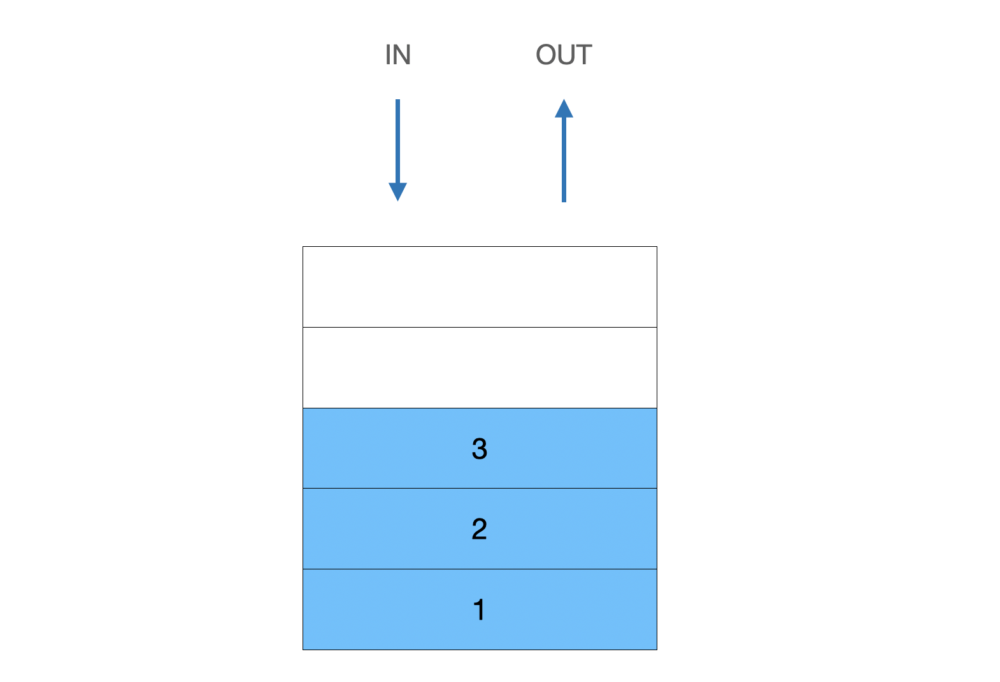
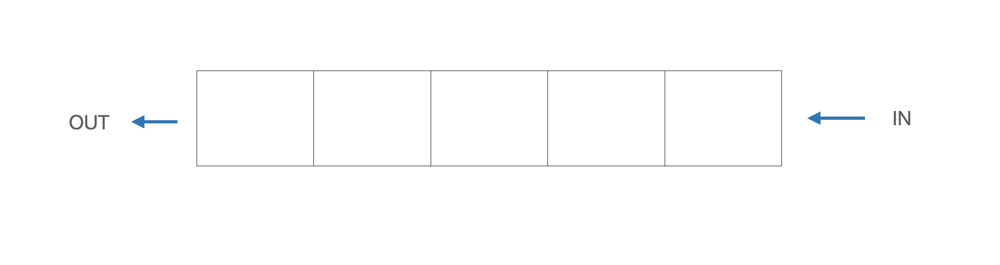
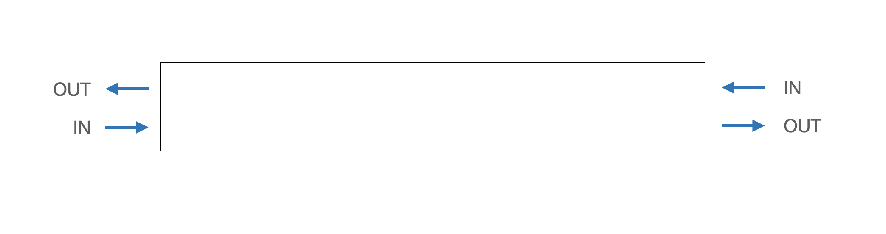

[Algorithm] stack, queue, deque
▶️ 스텍 (stack)
스텍은 한쪽에서만 push, pop (데이터 I/O)을 할 수 있는 선형 자료구조이다
- LIFO (Last In First Out)

tip!
(),{},[]가 등장하면 스텍을 활용하는 것을 고려해보자(70%~80%)
후위 연산
참고) 트리순회

- 전위 순회: 부모 → 왼쪽자식 → 오른쪽자식
- 중위 순회: 왼쪽자식 → 부모 → 오른쪽자식
- 후위 순회: 왼쪽자식 → 오른쪽자식 → 부모
후위연산을 하는데 스텍을 이용할 수 있다
const solve = (s) => {
const stack = [];
for(const item of s){
if(item === "+"){
temp1 = stack.pop();
temp2 = stack.pop();
stack.push(temp2 + temp1);
} else if(item === "-"){
temp1 = stack.pop();
temp2 = stack.pop();
stack.push(temp2 - temp1);
} else if(item === "*"){
temp1 = stack.pop();
temp2 = stack.pop();
stack.push(temp2 * temp1);
} else if(item === "/"){
temp1 = stack.pop();
temp2 = stack.pop();
stack.push(temp2 / temp1);
}else stack.push(parseInt(item));
}
return stack.pop();
}
console.log(solve("25+3*21+*"));
// 중위표현
(2 + 5) * 3 * (2 + 1)
// 결과
63
- 스텍(배열)을 생성해서 숫자는 순서대로 스텍에 넣어준다
- 연산자를 만난 경우 연산자를 가운데에 스텍에서 먼저 뺀 숫자를 뒤로, 늦게 뺀 숫자는 앞으로 배치하여 계산한다
- 계산한 결과를 스텍에 다시 넣어준다
백준2493 - 탑

간단하게 말해서 현재의 위치에서 바로 왼쪽의 탑중에 자신보다 큰 탑의 인덱스를 출력해주면 된다
const fs = require("fs");
const filePath = process.platform === 'linux' ? '/dev/stdin' : './2493.txt';
let input = fs.readFileSync(filePath).toString().trim().split("\n");
n = parseInt(input.shift());
input = input[0].split(" ").map(item => +item);
const solve = (nums, n) => {
const result = new Array(nums.length).fill(0);
const stack = [];
for (let i = n; i >= 0; i--){
while (stack.length > 0 && nums[stack[stack.length-1]] < nums[i]){
result[stack.pop()] = i+1;
}
stack.push(i);
}
return result.join(" ");
}
console.log(solve(input, n));
// 결과
0 0 2 2 4
- 먼저 자신보다 더 작은 탑이 없는 경우를 고려해서
result를 0으로 초기화해준다 - 스텍역할을 하는 배열을 하나 선언한다
- for문을 이용해서 뒤에서부터 반복한다
- 만약 스텍이 비어있고, 스텍의 인덱스를 가진 값이 for문의 i값을 인덱스로 하는 값보다 작으면(비교 -
while이용), 스텍의 가장 윗 인덱스를 제거하고 결과값에 떨어진 정도(i+1)을 저장한다 / 스텍에 값을 넣어준다
결과값을 출력하게 되면 자신보다 큰 탑의 인덱스를 저장하게 된다
▶️ 큐 (Queue)
큐는 스텍과 다르게 처음 양쪽에 하나씩 삽입(In), 삭제(Out)이 가능한 선형 자료구조이다
- FIFO (First In First Out)
- In, Out이 같은 방향에 있지 않는다

선행되어야 하는 항목
만약 스킬트리를 선택할 때 선행되어야 하는 스킬이 있다고 했을때 잘못된 스킬트리를 작성했을때는 NO를 정상적인 스킬트리라면 YES를 출력하는 문제
const solve = (skill, skill_trees) => {
const queue = skill.split("");
for(const s of skill_trees){
if(queue.includes(s)){
if(queue[0] === s) queue.shift();
else return "NO";
}
}
if(queue.length === 0) return "YES";
return "NO";
}
console.log(solve("ABC", "ABDCGE"));
// 결과
YES
- 먼저 정해진(선행되어야하는) 스킬을 큐 역할을 하는 배열로 변환시켜준다
- for문을 이용해서 작성한 스킬트리를 순회한다
- 작성한 스킬트리를 하나하나 순서대로 순회하면서 만약 선행스킬에 현재 스킬이 존재하고, 큐의 제일 앞에 위치한 스킬과 현재 스킬이 동일하다면 큐의 제일 앞항목을 제거하고 다시 진행한다(일치하지 않으면
return "NO") - 끝까지 다 진행했음에도 NO를 리턴하지 않았다면 YES를 리턴한다
▶️ 데크 (Deque)
큐와 비슷하지만 양쪽으로 삽입(In), 삭제(Out)이 가능한 선형 자료구조이다
- 스텍과 큐의 장점을 가지고 만든 구조
